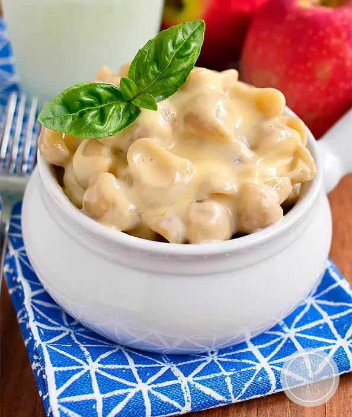

Gluten-free Macaroni and Cheese!

Description
Mac and cheese is one of those meals that’s not inherently gluten free but is a
cinch to adapt, especially because my version has no flour roux. Just 5 ingredients
(including salt!) tossed in a pot then stirred to create the creamiest gluten free
mac and cheese that tastes like it has loads of cream and butter but is actually made
with, get ready for it…
SKIM MILK.
Ingredients
- 2 cups dry gluten free shells or other short cut pasta (6oz)
- 2 cups skim milk
- 1 teaspoon
- dash cayenne pepper
- 1 cup freshly shredded cheese
Steps
- Rinse pasta under cold water in a colander then drain and add to a saucepan with
milk, salt, and cayenne pepper. Turn heat to medium then stir constantly until milk
comes to a simmer. Turn heat down to low then stir constantly until noodles are tender,
adding an additional 1/4 cup milk if noodles have absorbed all the liquid but aren’t
tender yet. There should be a bit of milk left in the saucepan to create the cheese
sauce.
- Add cheese to pan then stir until smooth, adding a splash of milk if necessary to help
smoothen the consistency. Place a lid on top for 5 minutes before serving.
NOTE: I copied and pasted this text from other websites on the internet as coding practice in HTML and CSS.